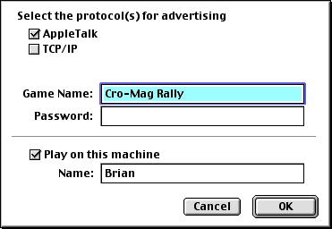

JUEGO EN RED
JUEGO EN RED
Cro-Mag Rally puede jugarse a través de una red de área local (LAN) con 2 a 6 jugadores. El juego utiliza Net Sprocket para configurar el juego en red, y así familiarizarse con la interfaz desde otro juego.
Para comenzar un juego en red, un jugador deberá ser el Huésped y los demás los Clientes, quienes se unirán al juego que crea el Huésped. El Huésped es el responsable de seleccionar el modo del juego y la pista en la cual se jugará. Para un mejor rendimiento, se recomienda que el Huésped sea el que posee la computadora más rápida. Los Clientes pueden abandonar el juego en red en cualquier momento, aún así, el juego continuará para los demás jugadores en la red. Sin embargo, si el Huésped abandona la red, el juego se da por terminado.
UBICACIÓN
Cuando inicia un juego en la red, verá el diálogo de Net Sprocket Hosting:

Net Sprocket le permitirá jugar a través de una conexión de AppleTalk o TCP/IP. No es recomendable jugar a través de una conexión TCP/IP, ya que el juego se desarrollará muy lentamente. Debe configurarse la opción "Jugar en esta máquina".
Cuando presione ACEPTAR, el juego será ubicado en la red, y los otros jugadores se unirán al juego...
UNIRSE AL JUEGO
Hasta 5 Clientes pueden unirse al juego en red iniciado por el Huésped. Cuando usted se une al juego, verá el diálogo Net Sprocket Join:
En la opción "Elija un juego" verá la lista de todos los juegos disponibles en la red que aceptan jugadores nuevos. Simplemente, seleccione el juego al cual desea unirse, ingrese su nombre y presione ACEPTAR.
Si usted no ve al Huésped en la ventana, verifique que todos los jugadores estén jugando con las mismas versiones de Cro-Mag Rally. Las versiones actualizadas del juego pueden no ser compatibles con las versiones viejas, por lo tanto, asegúrese de que todos los jugadores tengan la misma versión.
Una vez que todos los jugadores se unieron al juego, el Huésped iniciará el juego y usted estará ¡listo para jugar!